Set 1 · before / after ANMS

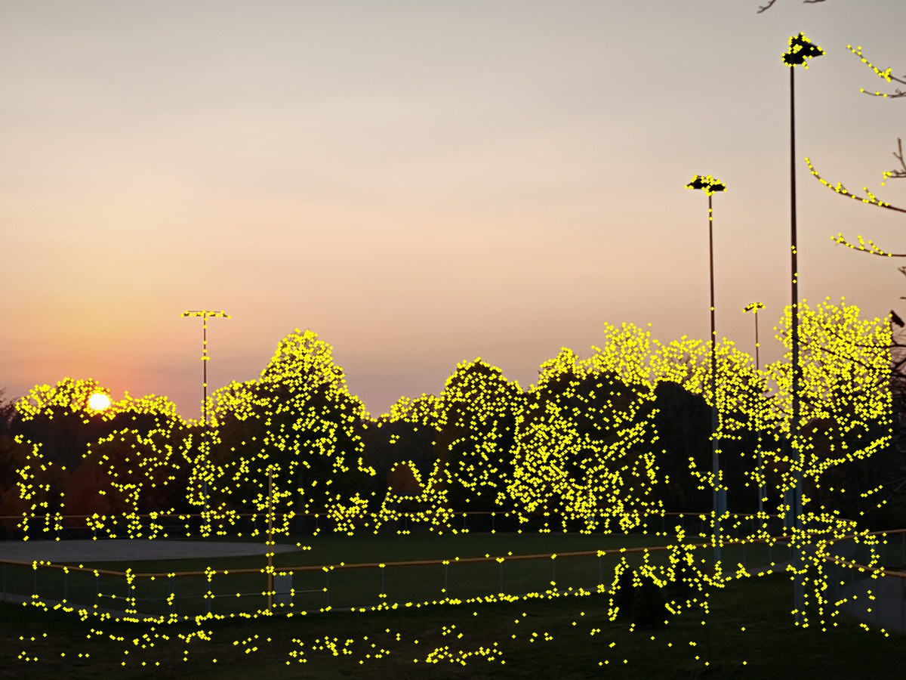

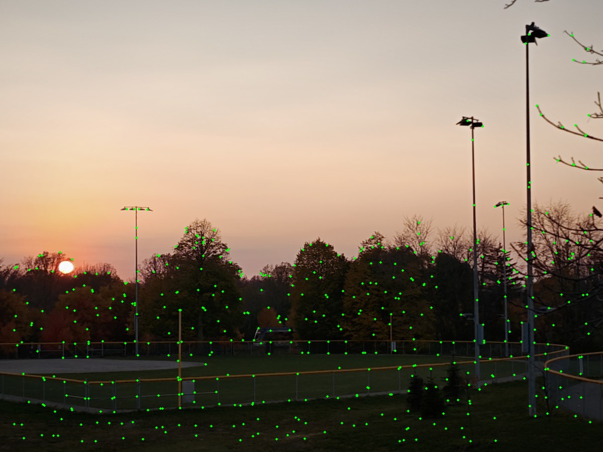
Part 2 · Feature matching
A simplified MOPS-inspired pipeline replaces hand-clicked correspondences with spatially distributed Harris corners, normalized local patches, ratio-test matching, and RANSAC homographies.
B.1 · Harris and adaptive suppression
The supplied single-scale Harris detector returns up to 5,000 positive-response candidates. Adaptive non-maximal suppression (ANMS) gives each point the distance to its nearest sufficiently stronger neighbor, using robustness factor 0.9, then retains the 500 largest suppression radii. Unlike selecting only the strongest responses, this spreads features across the image and the overlap region.


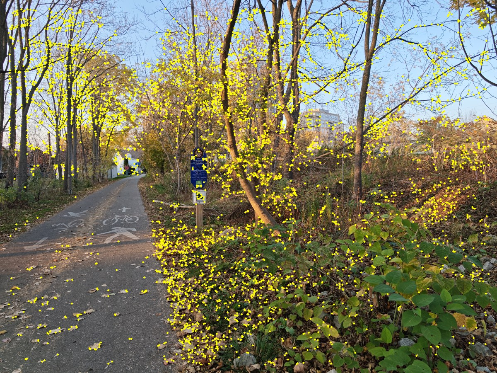
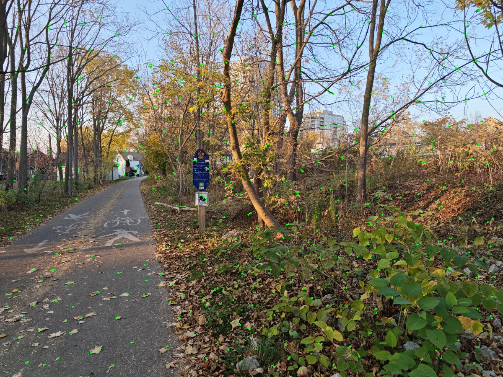
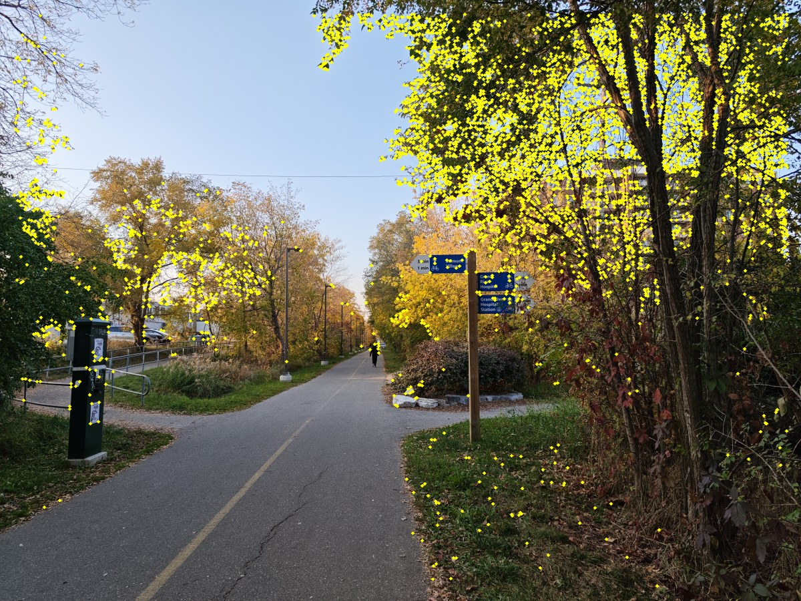
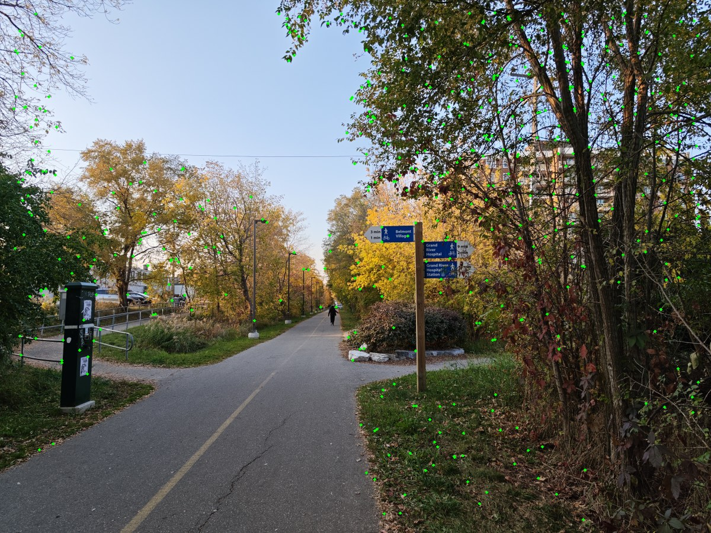
B.2 · Axis-aligned patch descriptors
For every ANMS point, I Gaussian-blur the grayscale image (sigma 2 pixels), bilinearly sample an axis-aligned 8 × 8 patch over a 40 × 40 neighborhood, then subtract its mean and divide by its population standard deviation. This makes each 64-value descriptor invariant to local intensity bias and gain. Points without a full neighborhood or with near-constant patches are discarded. The figures below visualize the normalized descriptor values, centered at gray.
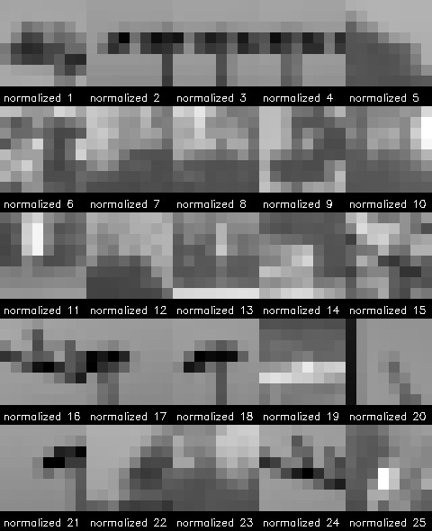
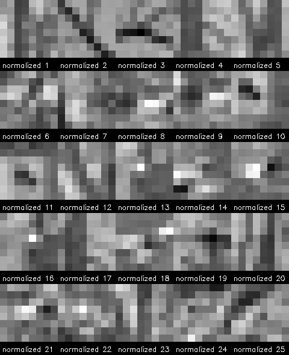
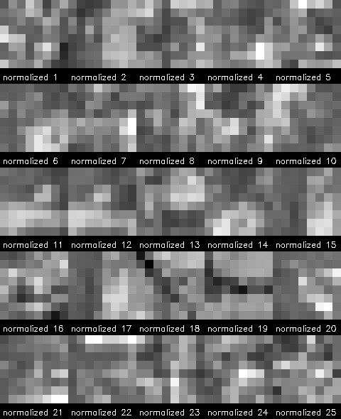
The normalized 64-value vectors, selected coordinates, and visualization patches are saved per image.
They are stored in compressed .npz data files for reproducibility; the figures above show
the descriptors in a readable 8 × 8 form. As specified, the descriptors are axis-aligned:
rotation invariance, multi-scale detection, and the paper's Haar-wavelet indexing are not used.
B.3 · Lowe ratio test
For each descriptor in the moving image, I find the two closest descriptors in the adjacent reference image using Euclidean distance. I accept the nearest match when its distance is less than 0.8 times the second-nearest distance, then keep one-to-one feature assignments. The overlays below show accepted candidates before geometric outlier rejection; their matching colors identify paired points. Figure 6b of Brown et al. shows correct matches concentrated at lower nearest/second-nearest ratios than incorrect matches. I use 0.8 as a permissive cutoff to retain candidates; RANSAC then rejects matches that do not agree geometrically.
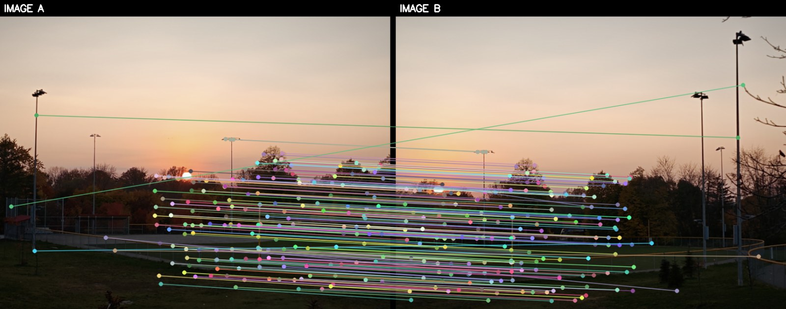
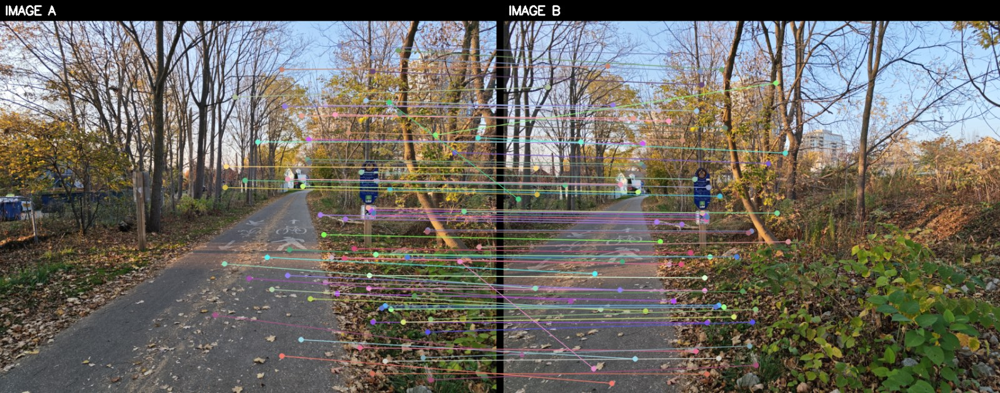
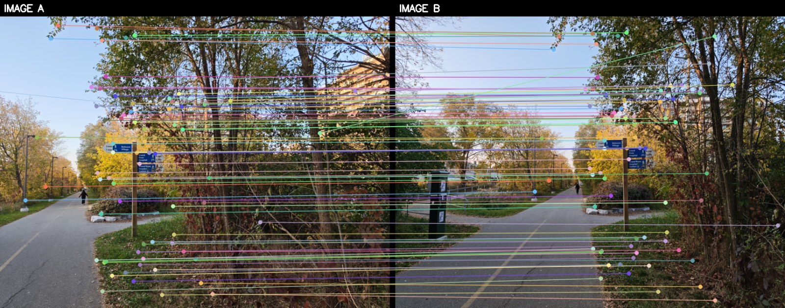
B.4 · Four-point RANSAC
RANSAC repeatedly samples four matches, estimates a homography, and counts matches whose reprojection error is at most 4 pixels at the 1,200-pixel working resolution. The iteration limit adapts to the observed inlier ratio (99.5% target confidence). I refit the homography to the consensus set, compose neighboring transforms into the first image's frame, and blend the warped views with the same feather compositor used in Part 1.
| Set / pair | Matches | Inliers | Median inlier reprojection error |
|---|---|---|---|
| Set 1 / 1 | 167 | 156 | 0.61 px |
| Set 1 / 2 | 230 | 222 | 0.58 px |
| Set 2 / 1 | 75 | 59 | 1.46 px |
| Set 3 / 1 | 72 | 52 | 1.77 px |
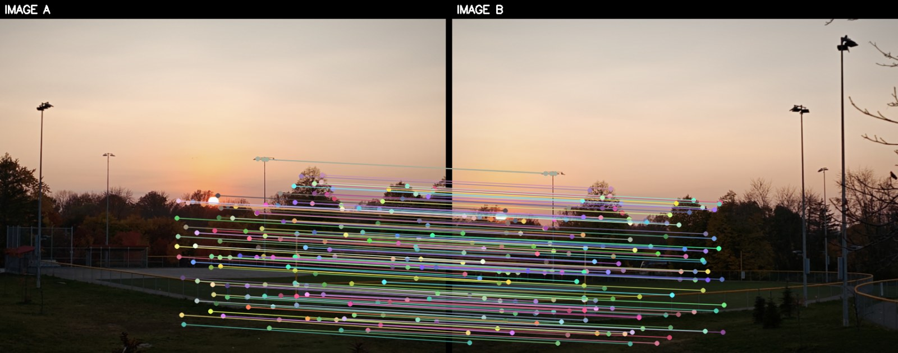
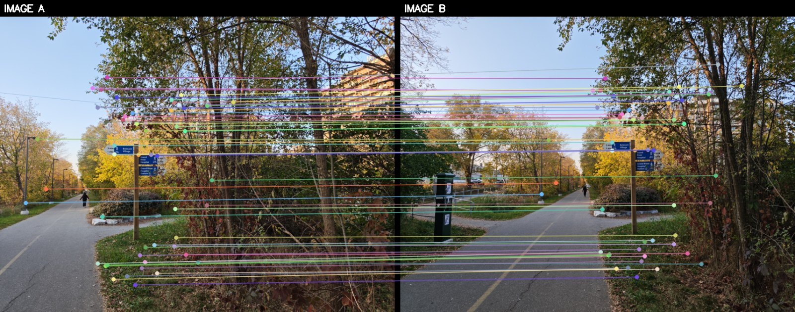
The automatic pipeline produces three mosaics. The side-by-side views use the same source sets as Part 1. In these examples, the automatic mosaics look more coherent overall, with less widespread residual ghosting. The methods prioritize different evidence: when selecting manual correspondences, I could focus on a particular object, such as the Set 3 street sign. The automatic pipeline instead uses a broader set of spatially distributed features and RANSAC consensus, without specifically prioritizing that sign. As a result, the automatic Set 3 mosaic aligns the sign less closely even though the wider scene appears more consistent. Both methods retain local ghosting because one global homography cannot fully align objects at different depths.
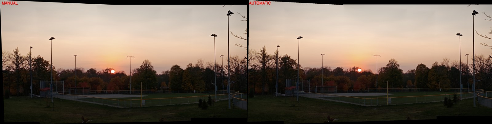
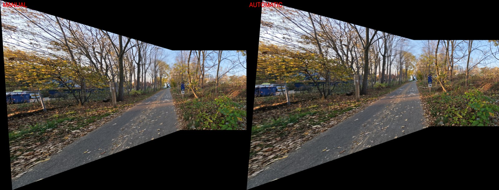
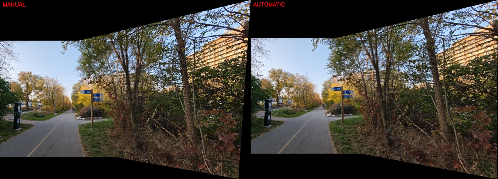
Part 2 source files and full-resolution artifacts · Python requirements